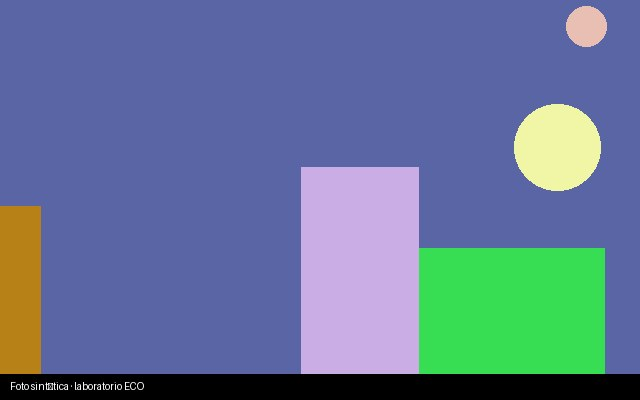

Deslizamiento cierra la vía Altamira–Río Claro


Un deslizamiento de tierra bloqueó por completo la vía entre Altamira y Río Claro.
Andrés Salcedo, comerciante del barrio El Bosque, contó a Crónica Andina que los comerciantes de la vía se quedaron sin mercancía.
El sector afectado es La Curva del Diablo, a la altura del kilómetro 23.
Alrededor de 400 vehículos permanecen detenidos en la vía.
En la vereda Las Acacias, la asociación de transportadores contó 268 viajes cancelados.